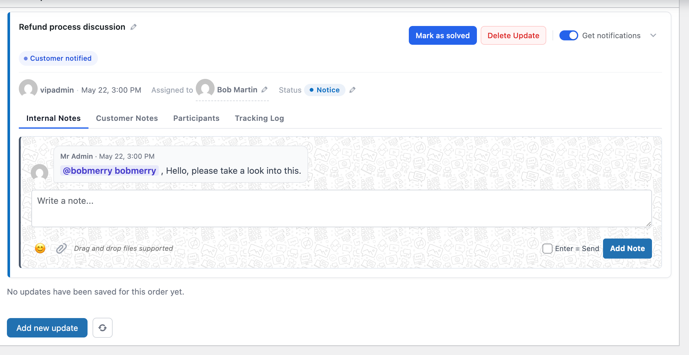
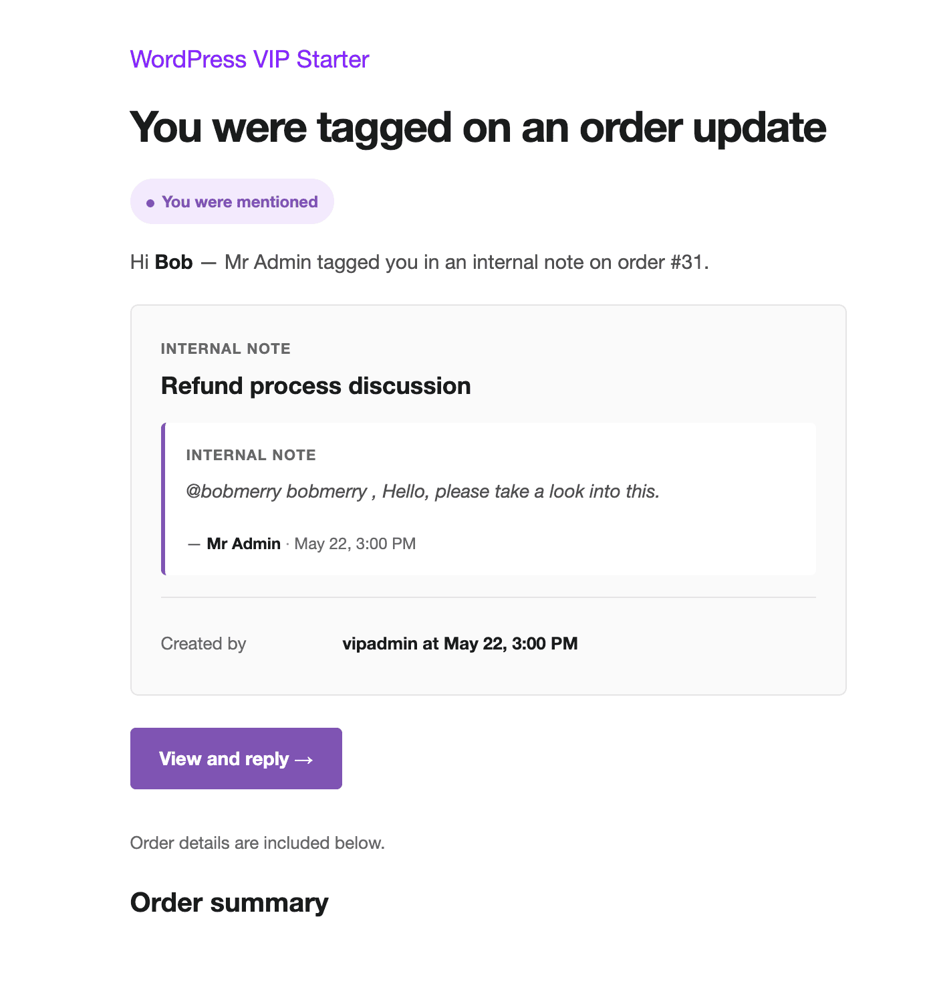
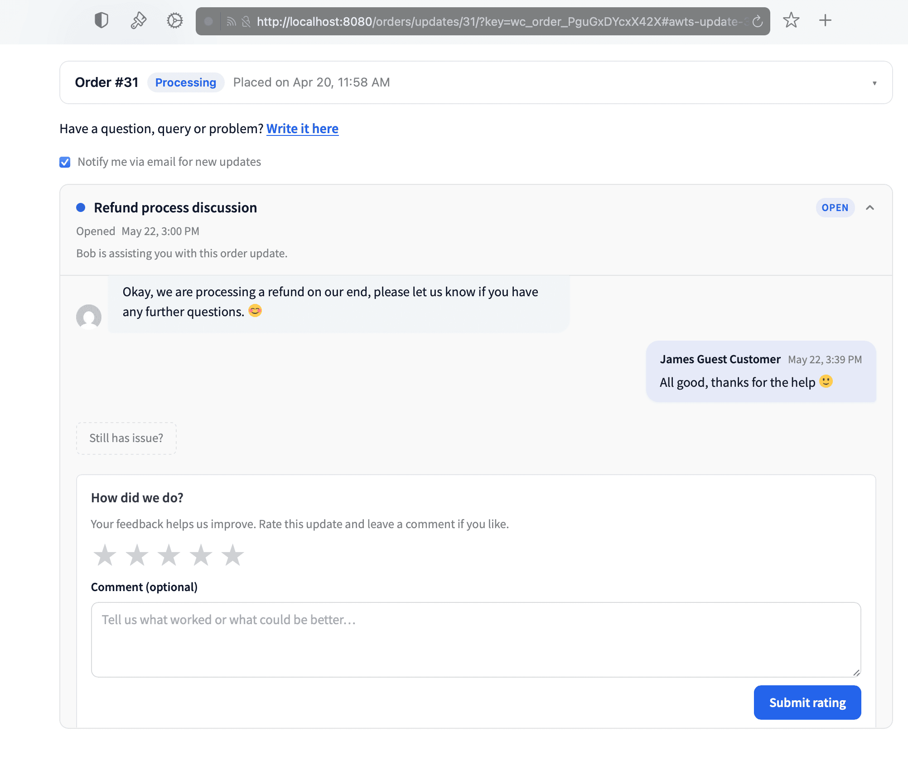
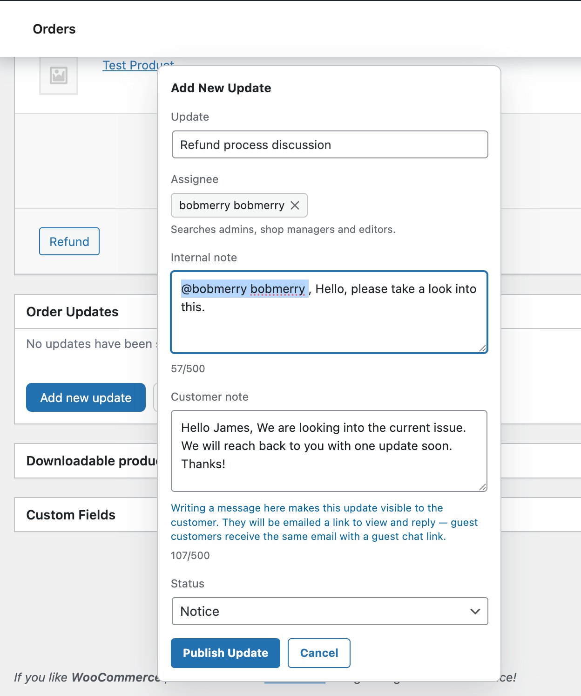
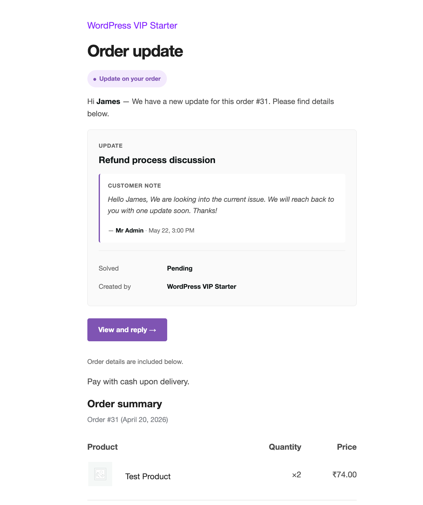
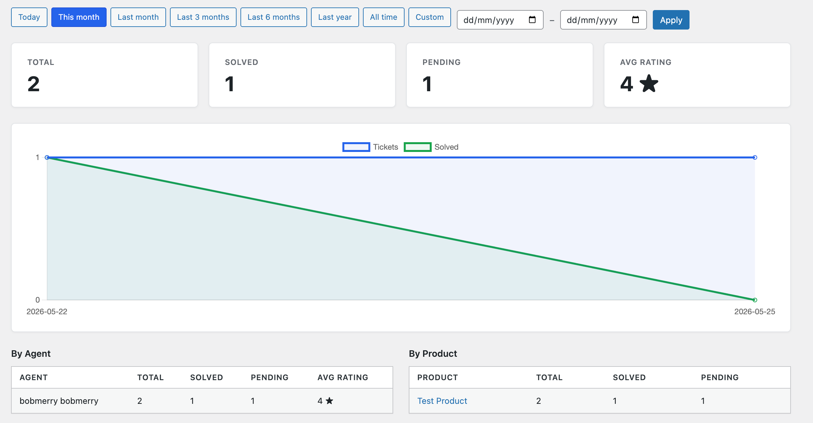
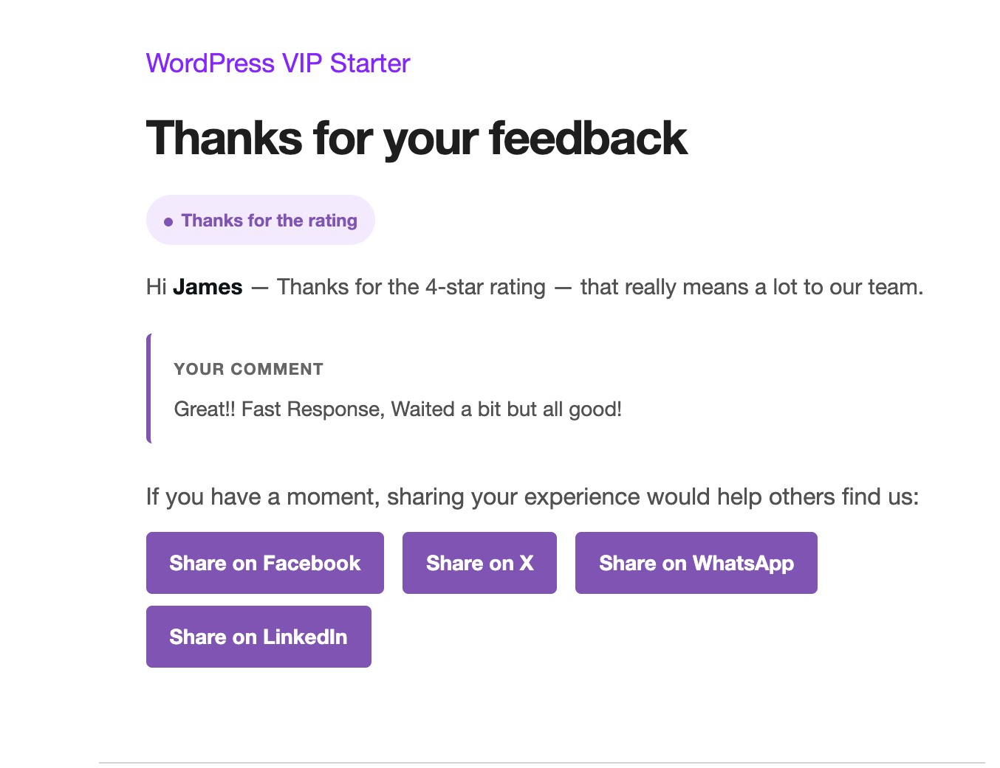

Step 1
Install in 30 seconds
Upload the .zip through Plugins → Add New → Upload, or pull it from GitHub. Database tables are created on activation. No setup wizard, no first-run questions.
Turn every order into a support thread. Custom statuses, customer portal, team @mentions, 5-star ratings, attachments, analytics — all inside your own WordPress. No separate app, no per-seat fees.



The delivery loop
A complete cycle — activate the plugin, talk to the customer through the order, get a 5-star rating, and watch the same customer come back. Then round again.
Step 1
Upload the .zip through Plugins → Add New → Upload, or pull it from GitHub. Database tables are created on activation. No setup wizard, no first-run questions.
Step 2
On any order, click Add new update, write a title, pick an assignee. Done. Send a customer-visible note from the same form — the customer gets an email with a secure link.

Step 3
Internal notes for the team, customer notes for the customer. Same thread, same order. @mention a teammate, attach a file, change the status — nothing leaks between sides.
Step 4
Customer reads the email, replies from their order page, attaches photos if needed. You carry the conversation through to solved — no email chains, no back-and-forth across tools.

Step 5
Mark the thread solved and the reply box becomes a 5-star widget. Happy customers get a thank-you with social share. Unhappy ones get a warm follow-up — and your admin gets a heads-up.
Step 6
A built-in dashboard tells you open vs. solved, median time to solve, who’s carrying the load, and which products generate the most threads. Spot bottlenecks early, reward your fastest responders.

Step 7 · and round again
Happy customer = next order. They’ve seen you actually answer, actually deliver, actually care — so they come back. Every new order kicks off the next thread, and the cycle begins again.

What you get
Two-thread conversations, customer portal, ratings & share, team workflow, analytics, REST API, privacy and security — all in one plugin.
Everything below ships free, in one plugin. No upgrade tier. No per-seat pricing. No tracking.
Reviews
Honest words from store owners and developers using Order Updates in their own WooCommerce stores.
Reviews
Honest words from store owners and developers using Order Updates in their own WooCommerce stores.
Real, verified reviews from store owners and developers will appear here the moment they come in. Used the plugin? Be the first to share an honest word.
Share your experienceTry before you install
Click the button to get your own fresh WordPress + WooCommerce install with the plugin pre-loaded. Yours for 60 minutes, then it auto-cleans up. No signup, no card.
Launch demo on InstaWPDemo runs on InstaWP’s free sandbox — your data is never shared with the plugin author.
Get the plugin
Three install paths. Pick whichever fits your workflow — all download the same .zip. No email required, no signup, no upsell.
I’ll email when the next release ships. No spam, no list rental, easy unsubscribe.
Documentation
38 pages of clear, simple writing. User guide for store owners. Developer guide for builders. Full reference for every hook, endpoint, setting, and table.
Day-to-day usage — creating updates, talking to customers, managing the team, collecting feedback.
Read →Architecture, hooks, REST API, helper classes, theme template overrides, extending the plugin.
Read →Alphabetical lists of every hook, REST endpoint, setting, and database table.
Read →Common questions, troubleshooting, and notes on compatibility (HPOS, page builders, hosts).
Read →Talk to the maker
Drop a note here and it lands in support@orderupdatesforwoo.com — my own inbox. I read every message; replies usually come within a day or two.
Your message is in. Watch for a reply at the email you entered.